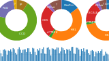
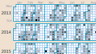
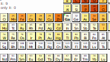
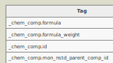
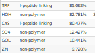

Visualizations and statistics
based on the PDB data

X-ray data processing
Interactive exploration of how detectors and the software in use differ between synchrotrons, and how they change in time. Plus other correlations.

Synchrotron work patterns
What can we tell from data collection dates in the PDB?

Periodic table in the PDB
Searching PDB entries by elements.

PDBx/mmCIF tags
A table that shows which tags are actually in use.
And
here is a similar table for COD
.

Frequency of chemical components
A table that counts in how many entries each residue and ligand is present.